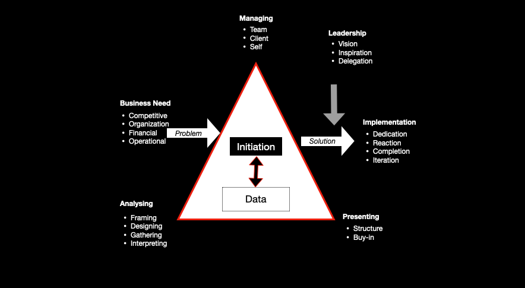

LKMM TM UISI 2021
Pemimpin Bima Sakti
Organization Analysis
Organization Analysis adalah tahap awal dalam mengetahui kondisi organisasi
-
KMO
Klasifikasi Masalah Organisasi
-
AKO

Analisis Kondisi Organisasi
Tujuan KMO
-
Mampu mengidentifikasi sumber masalah ancaman, hambatan, tantangan, dan peluang organisasi yang berasal dari dalam organisasi
-
Mampu mengidentifikasi sumber masalah ancaman, hambatan, tantangan, dan peluang organisasi yang berasal dari luar organisasi
-
Mampu menganalisa masalah, akar permasalahan, hingga memahami metode pencarian dan penyelesaian masalah organisasi
"Masalah" muncul darimana?
Gap Scenario Solver
Basic Model of Strategic Management
Basic Model of Strategic Management
KMO
=
Environmental Scanning?
ENVIRONMENTAL SCANNING
Proses Klasifikasi Masalah Organisasi dengan melihat masalah dan peluang yang ada di dalam dan di luar organisasi dengan menggunakan SWOT Analysis.
Environmental Scanning
-
Internal Scanning
-
External Scanning
Internal Scanning
7S McKinsey
7S McKinsey Framework adalah sebuah metode yang digunakan untuk menganalisis aspek internal organisasi dengan menggunakan 7 elemen utama.
Model analisis ini diperkenalkan oleh Tom Peters dan Robert Waterman yang bekerja sebagai konsultan di perusahaan McKinsey & Company pada tahun 1980-an
Shared Value
Sesuatu yang disepakati menjadi budaya organisasi dan nilai organisasi secara terus
menerus
Apa core value ormawaku?
Bagaimana kondisi budaya/keyakinan turun-temurun dari ormawaku?
Bagaimana pengaruh core-calue terhadap keberlangsungan ormawaku?

Staff
Seseorang yang bekerja di organisasi
Posisi apa yang masih belum bisa dipenuhi di dalam ormawaku?
Bagaimana kompetensi yang ada dalam anggota/staff? Apakah ada gap pada posisi yang dibutuhkan?
Bagaimana jumlah ataupun karakter dari anggota/staff ormawaku?
Style
Suatu gaya kepemimpinan dan gaya kerja yang dianut oleh pimpinan organisasi
Bagaimana efektivitas kepemimpinan dari pimpinan ormawaku?
Bagaimana partisipasi pimpinan organisasi dalam memimpin kegiatan kerja ormawaku?
Bagaimana efek yang ditimbulkan dari pimpinan ke staff/anggota ormawaku? Kompetitif? Kooperatif? Destruktif?
Skill
Sesuatu yang berkaitan dengan kompetensi dan kapabilitas orang yang bekerja di
organisasi
Kemampuan apa yang paling menonjol dari seluruh orang dalam organisasi?
Apakah terjadi ketimpangan antara tiap skill yang dibutuhkan di dalam ormawaku?
Bagaimana eksekusi terhadap suatu tugas/rencana yang dilakukan oleh anggota ormawaku?
Strategy
Suatu rumusan/perencanaan yang digunakan untuk mempertahankan dan membangun keunggulan
organisasi yang berkelanjutan dan kompetitif
Apa strategi ormawaku?
Bagaimana visi dan misi ormawaku ke depannya?
Bagaimana rencana ormawaku dalam menghadapi perubahan kondisi seperti sekarang?
*Proker, agenda, arahan kerja, GBHK, GBPK

Structure
Sesuatu yang mengatur system kerja, komunikasi, wewenang dan tanggung jawab serta
pendelegasian tugas kepada unit kerja atau orang-orang tertentu
Bagaimana pembagian kerja ormawaku?
Bagaimana bentuk hierarki ormawaku?
Bagaimana hubungan koordinasi antar kementerian/divisi ormawaku?
System
Suatu prosedur yang berisikan kegiatan operasional harian dan hal yang harus dipatuhi oleh
anggota organisasi
Bagaimana system utama yang dijalankan oleh ormawaku?
Bagaimana system itu dapat digunakan diperhatikan dan dievaluasi?
Bagaimana aturan yang berlaku di ormawaku?
*SOP, Laporan Pertanggungjawaban, AD-ART
Environmental Scanning
External Scanning
Identifikasi aspek-aspek yang ada di luar organisasi
Muncul peluang dan ancaman organisasi (Opportunity dan Threat).
Metode identifikasi eksternal organisasi dapat menggunakan analisis PRL
PEST Analysis
-
Analisis PEST adalah analisis terhadap factor lingkungan eksternal bisnis (politik, ekonomi, sosial, dan teknologi).
-
Output dari analisis ini didapatkan peluang atau ancaman bagi organisasi. (Ward and Preppard, 2002, p70-72)
Variasi Analisis PEST
Rincian Variasi Analisis PEST
-
Social
- a. Income and labour
- b. Educational attainments
- c. Living conditions
- d. Health factors
- e. Attitudes toward work/leisure
- Technological
- a. Available technology
- b. Emerging technology
- c. Proficiency of consumers in using relevant technologies
- d. Attitudes towards technology
- Economic
- a. Regional, national, or international economies
- b. Taxation
- c. Inflation
- d. Major/minor industries
- Environmental
- a. Natural resources
- b. Local plant or wildlife
- c. Waste disposal/recycling
- d. Attitudes toward sustainability
- e. Ecological change/balance
- Political
- a. Government structure and stability
- b. Political party dynamics
- c. Public policy
- d. International agreements
- Legal
- a. Compliance with regulating bodies
- b. Laws related to contracts and employment
- c. Union dynamics and issues
- Ethical
- a. Necessary reporting procedures
- b. Impacts of reputation on business success
- c. Confidentiality
- Demographic
- a. Total population make-up
- b. Ethnic diversity
- c. Age group dynamics
- d. Gender differences
- e. Population shifts
Analisis PESTEL
- Politik faktor-faktor bagaimana campur tangan pemerintah dalam perekonomian
- Ekonomi semua factor yang memengaruhi daya beli dari customer dan memengaruhi iklim berbisnis suatu perusahaan
- Sosial semua factor yang dapat memengaruhi kebutuhan dari pelanggan dan memengaruhi ukuran dari besarnya pangsa pasar yang ada
- Teknologi semua hal yang dapat membantu dalam menghadapi tantangan bisnis dan mendukung efisiensi proses bisnis perusahaan
- Environmental Digunakan Ketika melakukan perencanaan strategis lokasi seperti factor geografis
- Legal Pengaruh hukum, seperti perubahan undang-undang yang ada atau yang akan datang
PESTEL Analysis
=>
PRL Analysis?
PRL
Politic, Relation, Legal
Politic
Segala hal yang berkaitan dengan stakeholder berwenang mengintervensi kebijakan
organisasi
Bagaimana peran manajemen departemen/fakultas dalam mengatur kegiatan kegiatan ormawaku?
Bagaimana partisipasi, perizinan dan bantuan birokrasi dalam menyukseskan kegiatan ormawaku?
Relation
Segala hal yang berkaitan dengan hubungan Kerjasama, koordinasi dan bahkan kompetisi dengan
pihak-pihak di luar organisasi
Bagaimana koordinasi kegiatan manajemen departemen dengan ormawaku?
Bagaimana kondisi hubungan kerja antar ormawa di lingkup fakultasku?
Bagaimana daya dukung alumni terhadap program kerja dan kegiatan ormawaku?
Legal
Segala hal yang berkaitan dengan pengaruh aturan tertulis/tidak tertulis, hukum yang
berlaku, dan tatanan umum dalam berorganisasi
Bagaimana kondisi kebijakan kampus untuk ormawaku?
Bagaimana korelasi MUBES V terhadap arah gerak organisasiku saat ini?
Bagaimana efek dari peraturan dan ketetapan yang memengaruhi pembentukan ormawaku?
Metode Identifikasi
-
Penelitian Pustaka
- Literatur
- Mubes
- AD/ART
- GBHK
-
Penelitian Lapangan
- Observasi
- Dokumentasi
- Depth Interview
- Survei (kuesioner)
Root Cause Analysis
Root Cause Analysis (RCA) adalah tool yang populer digunakan oleh perusahaan yang menjalankan proses peningkatan kinerja dalam bentuk inisiatif problem solving; serta untuk membantu tim menemukan akar penyebab (root-cause) dari masalah yang kini sedang dihadapi
Root Cause Analysis Process
5 Why Analysis
Pembuatan Kuesioner
-
01. KMO
- List Atribut S dan W (Internal)
- List Atribut O dan T (Eksternal)
-
02. Pembuatan Kuesioner
- Berupa kalimat pernyataan atau pertanyaan
- Skala Likert 1-4 (sangat tidak sepakat - sangat sepakat)
-
03. Responden
- Siapa aja?
- Berapa orang?
-
04. Analisis
- IFAS (Internal Factor Analysis Summary)
- EFAS (External Factor Analysis Summary)
Tujuan AKO
-
Mampu memahami dan mengidentifikasi penentuan stakeholder map
-
Mampu mengidentifikasi proses perumusan analisis kondisi organisasi
-
Mampu menghubungkan variable-variabel yang berpengaruh terhadap organisasi untuk menyusun strategi
Gap Scenario Solver
Basic Model of Strategic Management
Basic Model of Strategic Management
AKO
=
Stakeholder Mapping
Stakeholder Matching?
Stakeholder Mapping
-
Quantitative Research
Menurut Aliaga dan Gunderson (2002) quantitative research merupakan pendekatan permasalahan sosial, yang menjelaskan fenomena menggunakan sekumpulan data yang dianalisa menggunakan metode matematis dan statistik
-
Purposive Sampling
Teknik pengambilan sampel sumber data dengan pertimbangan tertentu
-
Expert Judgement
Pertimbangan/pendapat ahli/orang yang berpengalaman dengan salah satu cara penentuan stakeholder yang menilai melalui group discussion
Stakeholder Mapping
Butuh Seorang EXPERT
dalam menentukan stakeholder mapping
01. Orang yang paham dengan kondisi ormawa sekarang
02. Orang yang peduli dan selalu memantau jalannya ormawa
03. Orang yang mengetahui kondisi ideal ormawa
Tabel IFAS & EFAS
Sumbu Internal (x-axis)
Selisih antara kekuatan dan kelemahan (S - W)
X = S - W
X = 2.7879 = 2.6479
X = 0.14
Sumbu Eksternal (y-axis)
Selisih antara peluang dan ancaman (O - T)
Y = O - T
Y = 2.1579 = 1.8879
Y = 0.27
SWOT Analysis Quadrant
Progresif (Progressive)
Posisi pada kuadran I (+,+) menandakan keadaan organisasi yang kuat dan berpeluang
Ubah Strategi (Turnaround)
Posisi pada kuadran II (-,+), menandakan keadaan organisasi sangat lemah namun sangat berpeluang
Bertahan (Defensive)
Posisi pada kuadran III (-,+), menandakan keadaan organisasi dalam keadaan lemah dan menghadapi tantangan besar
Diversifikasi (Diversification)
Posisi pada kuadran IV (+,-), menandakan keadaan organisasi yang kuat namun menghadapi tantangan besar
Matching Stage
Matriks TOWS
Matriks TOWS
-
Sebuah alat yang dapat digunakan untuk menciptakan factor strategis organisasi, bagaimana dan ancaman dihadapi oleh perusahaan dapat disesuaikan dengan kekuatan dan kelemahan yang dimiliki oleh organisasi tersebut. TOWS matrix akan memberikan empat set dari strategi alternative bagi perusahaan
David, Fred R, 2006
TOWS Matrix
Matriks TOWS
-
Strategi SO
Perpaduan kekuatan dengan peluang, organisasi seharusnya memanfaatkan kekuatan internal
Umumnya organisasi akan mengejar agar mendapat situasi dimana organisasi dapat melaksanakan strategi-strategi pada kotak SO
-
Strategi ST
Perpaduan kekuatan dengan ancaman (kotak ST), organisasi pada posisi ini seharusnya menggunakan kekuatannya untuk menghindari atau mengurangi dampak dari ancaman lingkungan eksternal
Diharapkan organisasi dapat mengembangkan diri untuk kepentingan bersama
-
Strategi WO
Perpaduan kelemahan dengan peluang (kotak WO), organisasi sebaiknya mengurangi kelemahan internalnya dan mengambil manfaat peluang-peluang eksternal
Terkadang terdapat peluang eksternal, namun organisasi menghadapi juga kelemahan internal sehingga menghambatnya untuk mengesploitasi peluang-peluang tersebut
-
Strategi WT
Perpaduan kelemahan dengan ancaman (Kotak WT), organisasi pada posisi ini sebaiknya melakukan strategi bertahan yang secara langsung diarahkan untuk mengurangi kelemahan internal dan menghindari ancaman lingkungan eksternal